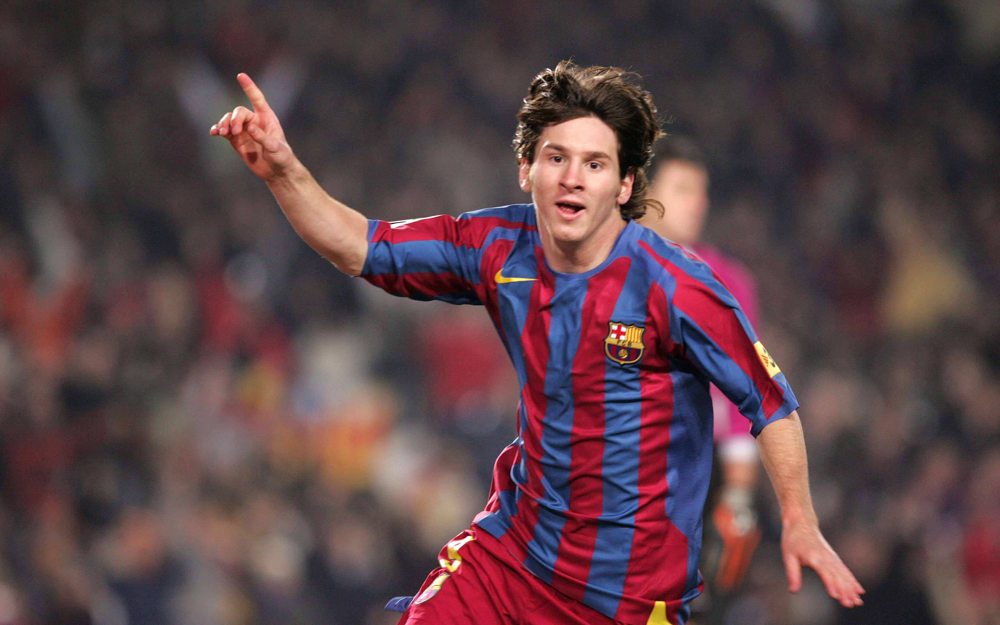
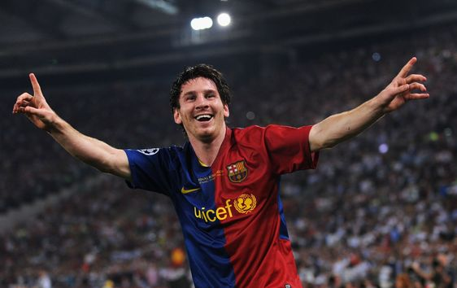
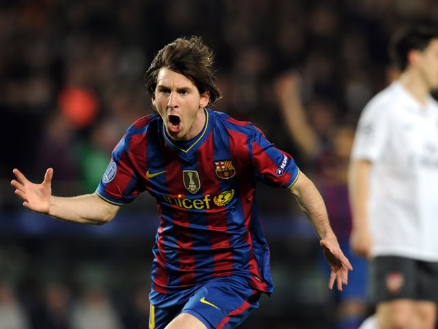
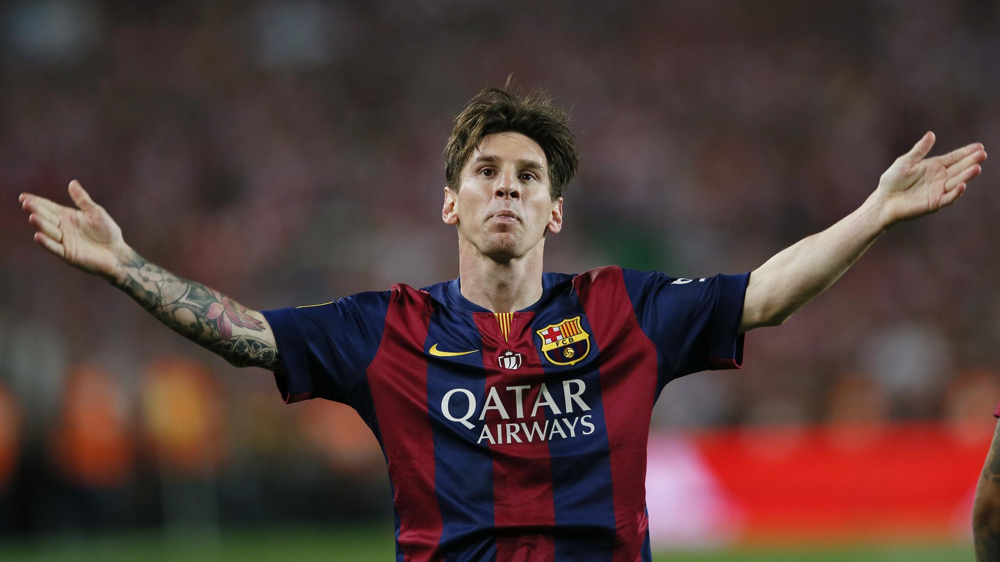
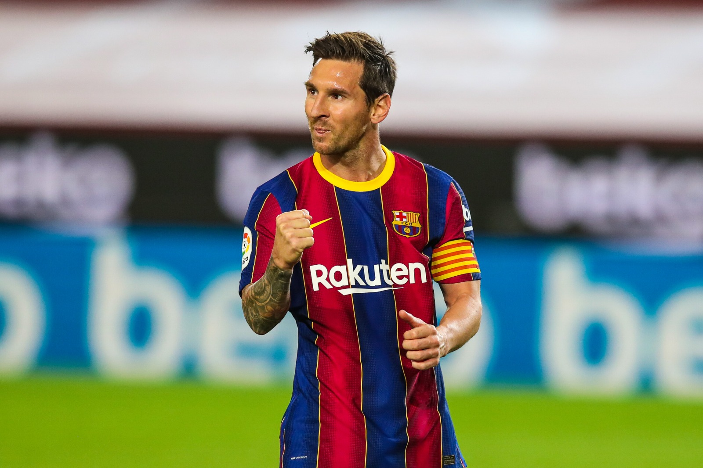
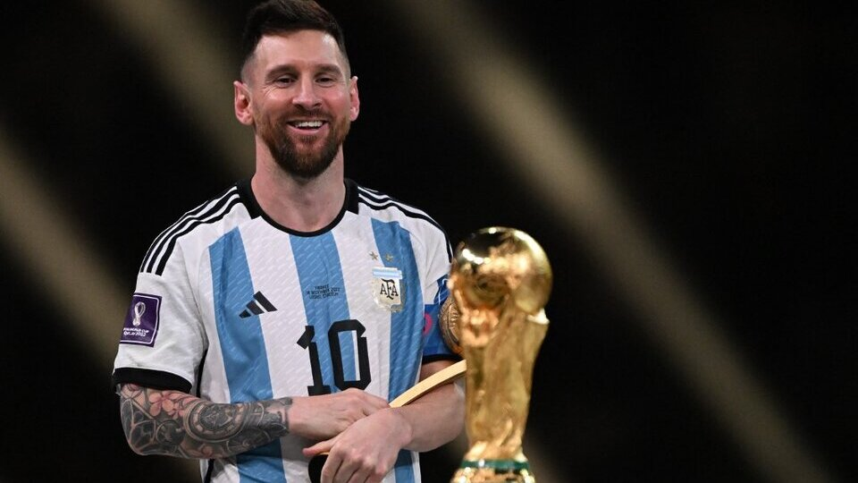

RÉCORDS DEL GOAT
Máximo goleador sudamericano de la historia del fútbol en partidos oficiales: 805 goles.
Máximo goleador de la historia del fútbol en un mismo club: 672 goles con el Barcelona.
Más goles oficiales en un año natural (club y selección nacional): en 2012, con 86 goles, ingresó al Guinness World Records, pero terminó el año con 91.
Más goles oficiales en una misma temporada (club y selección nacional): 82 goles en 69 partidos en 2011-12.
Más goles oficiales en un año natural (club): 84 (59 en la Liga, 13 en la Champions, 5 en la Copa del Rey y 2 en la Supercopa) en 2012.
Más goles oficiales en una misma temporada (club): 73 goles en 60 partidos en 2011-2012 (50 en la Primera División de España, 14 en la Liga de Campeones de la UEFA, 3 en la Copa del Rey, 3 en la Supercopa de España, 1 en la Supercopa de Europa y 2 en la Copa Mundial de Clubes de la FIFA).
Único jugador de la historia en anotar 50 o más goles en nueve años distintos: 60 (2010), 59 (2011), 91 (2012), 58 (2014), 52 (2015), 59 (2016), 50 (2017), 51 (2018), 50 (2019).
Más veces ganador del premio al mejor jugador del mundo de la FIFA: ocho veces (cuatro FIFA Balón de Oro, un FIFA World Player y tres The Best)
Máximo ganador del Balón de Oro: ocho veces
Máximo ganador de la Bota de Oro: seis veces
Máximo goleador argentino en mundiales: 13 goles a 2022
Jugador con más partidos en Mundiales: 26 a 2022
Jugador con más minutos en Mundiales: 2314 a 2022
Único jugador en recibir dos veces el Balón de Oro de la Copa Mundial de Fútbol: 2014 y 2022.
Máximo ganador del Olimpia de Plata: dieciséis veces
Máximo ganador del Olimpia de Oro: cuatro veces
Máximo goleador histórico de las cinco grandes ligas europeas: 702 goles (672 en Barcelona y 30 en PSG)
FOTOS DE SU CARRERA

2004

2008

2010

2015

2020

2022
Sobre Mí
Hola soy Joaco, hice esta pagina aburrido dedicada al más grande de la galaxia. Por otro lado, es mi primera página así que tenganme piedad.
Gracias por verla, los odio mucho!!